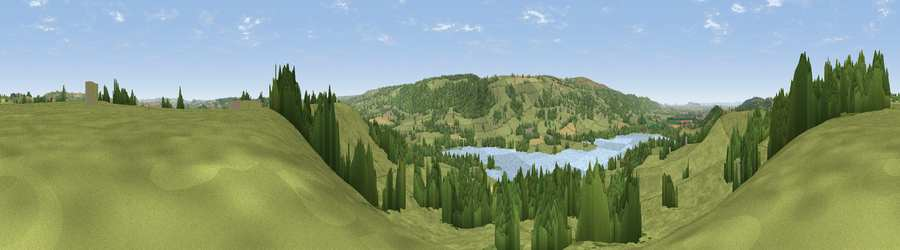

Viewpoint near Nempnett Thrubwell
#14184 in England · top 25% of its area beats it · near Nempnett Thrubwell · footpathWhere it is
The exact computed spot (ST 52675 60475). Click the marker for map links.
Public access: a public right of way passes within 6 m of this spot. Computed from Natural England's CRoW access layer and OpenStreetMap rights of way — not the legal definitive map. Always verify locally.
The view, rendered

A 360° render of this exact spot computed from the terrain model, tree cover and land cover — summer colours, afternoon light, calibrated against photographs of famous viewpoints. Real trees, hedges and buildings will differ in detail.
The panorama
Grey silhouette: terrain skyline in each direction (720 bearings, Earth curvature and refraction included). Dashed green: skyline with trees (+15 m) and buildings (+8 m) as obstacles. Blue strip: how far the ground is visible on each bearing.
Where the view opens
Wedge length = distance to the farthest visible ground on that bearing (vegetation-aware). Rings at 10, 25 and 50 km.
What fills the view
67% grassland · 20% woodland · 8% water · 4% cropland ·
Angular shares of the visible panorama (visual magnitude), not map area. Landscape diversity 0.42 (0–1 Shannon).
Key numbers
More beautiful places nearby
The staircase of upgrades: each row has a higher view potential than everything closer. Driving times are estimates from straight-line distance, calibrated against real road routing — check an actual route before setting out.
| Place | Direction | Drive | Score |
|---|---|---|---|
| Viewpoint near Nempnett Thrubwell | SE · 1 km | ~2 min | 60.4 |
| Viewpoint near Ubley | SSW · 3 km | ~7 min | 72.2 |
| Viewpoint near Charterhouse | SW · 5 km | ~10 min | 74.0 |
| Beacon Batch | SW · 5 km | ~12 min | 79.4 |
| Bleadon Hill [Loxton Hill] | WSW · 16 km | ~29 min | 79.6 |
| Viewpoint near Holford | WSW · 42 km | ~62 min | 80.8 |
| Viewpoint near Holford | WSW · 42 km | ~62 min | 82.2 |
| Viewpoint near Holford | WSW · 43 km | ~63 min | 85.9 |
51.34138, -2.68081 · source: screening · position refined by local search. Computed location — check access rights before visiting.